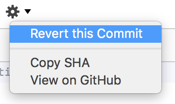

First exercise for a D3 workshop running at the Financial Times
One of the immediate benefits of using source control is that it can increase your confidence in (and so your likelihood of) making changes and improvements to existing code. This can help you write better more flexible code and help fight bad habits like commenting out large chunks of code and keeping code that is no longer used in your files which may confuse you later.
Before we start you'll need a local repository to work through the steps on your computer. If you have the GitHub desktop client installed on your computer it should be simply a question of either..
This is the most common case: You've made some changes and broken something, you haven't commited the changes to your repository and just want to get back to when things were working 5 minutes ago.
Here's how you do it.
First go into your text editor and make some changes, some BAD changes. Go into index.html in the repo you just made, change a bunch of stuff and save the file. Oh no, let's fix this terrible mess!
The main panel on the GitHub desktop client can show one of two things 'Uncomitted Changes' or 'History'. Make sure you're looking at uncomitted changes. That fine mess you just made should be shown on the right and the name of the file in which you made it on the left right-click (or cmd-click if you prefer) on the file name and select 'Discard Changes...'
You'll then be asked to confirm you want to discard your chages:
Are you sure you want to discard all changes to "index.html"?
Yes, you are!
Now if you go back into your editor you'll see the file is in it's nice un-ruined original condition.
Make some mistakes and commit them to your repository.
Uh oh! You've made more of a mess of things and commited your changes to the repository! Don't worry, all is not lost you can go back to any point in your commit history and make things right again.
If you make small commits, relating to a single feature or file then this can be relatively painless otherwise it can be a bit tricky.
There are a couple of places within the GitHub app where you can review your commit history:

To revert a commit, select that commit either from the list on the left, or the timeline above.
When you've selected your commit you can see the details of what that commit changed in the main panel. Click on the little cog icon to reveal a menu and select 'Revert This Commit'

Phew!
If you want to go back several commits, your best bet it to revert them in order from newest to oldest. If you revert commits in any other order, you may see merge conflicts -- you don't want that.
A good way to use git for developing -- espescially in a situation where you may want several people working on the code at the same time -- is to make a new branch for each new feature as you start working on it and then, when you're happy with that feature and it all works, merge it back into the master branch.
So first: Let's make a new branch. Make sure you don't have any outstanding commits and then in the tool bar of the GitHub desktop app there's a little button with a sort of branching line and a +. Click that and you'll be prompted to give your new branch a name. See:
Give the branch a sensible name, something that describes the feature you want to add or the fix you want to make. Something like 'add-colour-picker' or 'extract-linechart-drawing' and click 'Create Branch' you'll automatically be switched to that branch and any new commits you make will be to that branch.
When you're happy with all the changes you've made and commited, switch back to the 'master' branch using this little menu:

This will then allow you to compare your branch with the 'master' each comit being a dot on the timeline the split in the timeline being the point at which you branched.
If you're happy with what you've done you can click the 'update from your-branch-name-here' buttonn and a new commit will be created on your master branch with all the changes now available there.
A more advanced version of this workflow, suitable for larger projects is Gitflow, a clear explanation of which can be found by following this link that you're reading right now
Remember: Although we'll be using the GitHub client you can do similar thinsg with the command line or other UIs like SourceTree